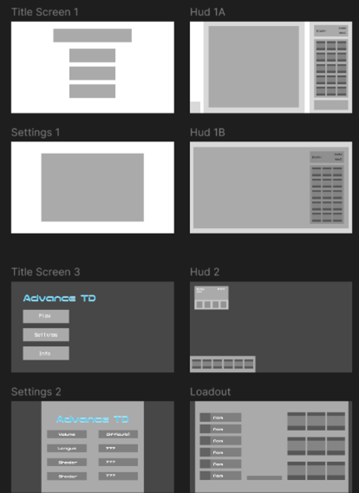
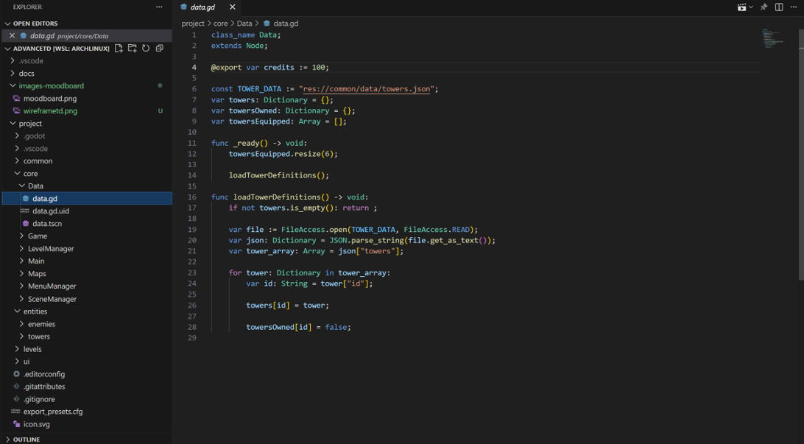
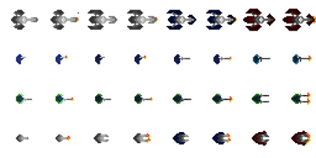
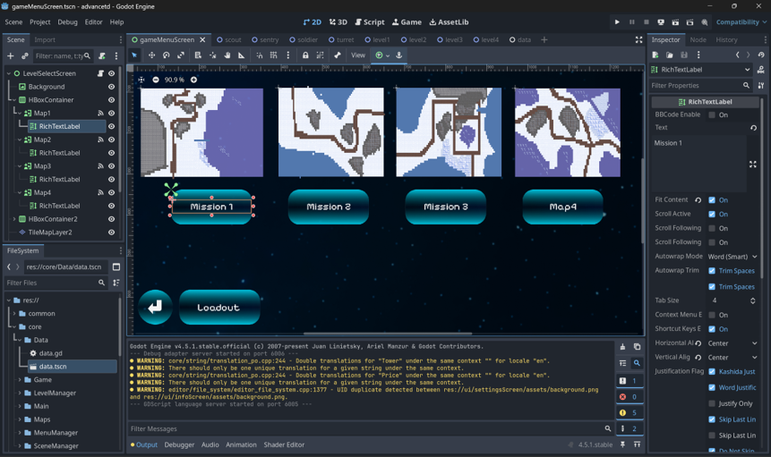
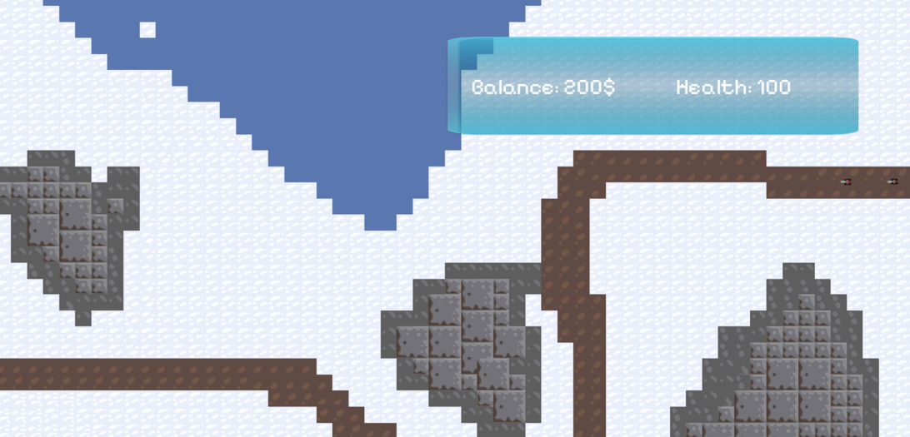

The game's concept was made based on existing ideas with new designs, such as the specific designs of the menu, shop, and level UI.

Godot was chosen as a game engine, and I built a tower-defense game library inside to make it easier to add new content (towers, textures, maps). I managed the scene transitions using a custom state machine.

The textures were made in pixelorama (coincidentally, this pixel editor is also made in godot) by my teammate Sean, who also pulled assets from one of our previous personal projects modding Mindustry. The menu elements were made in figma and then exported for use in the game.

Everything was integrated in Godot, taking up the typical last 10% of the project that eats 90% of the time.

The game was then balanced and tested to make the experience more enjoyable, tweaking enemy wave sizes, health, costs, etc.

Advance TD was finally compiled and exported for the web. You can play it right now by clicking on the project card at the top of the page!